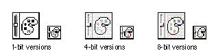

|
Control Panel IconsThe control panel icon is a square with a slider on it to identify it. The slider also appears on the Control Panels folder. You can add a graphic to the square to customize the icon. You can display the slider in either a horizontal ora vertical orientation. Figure 8-43 shows the icon family for the Color control panel. Figure 8-43 Icons for the Color control panel  |